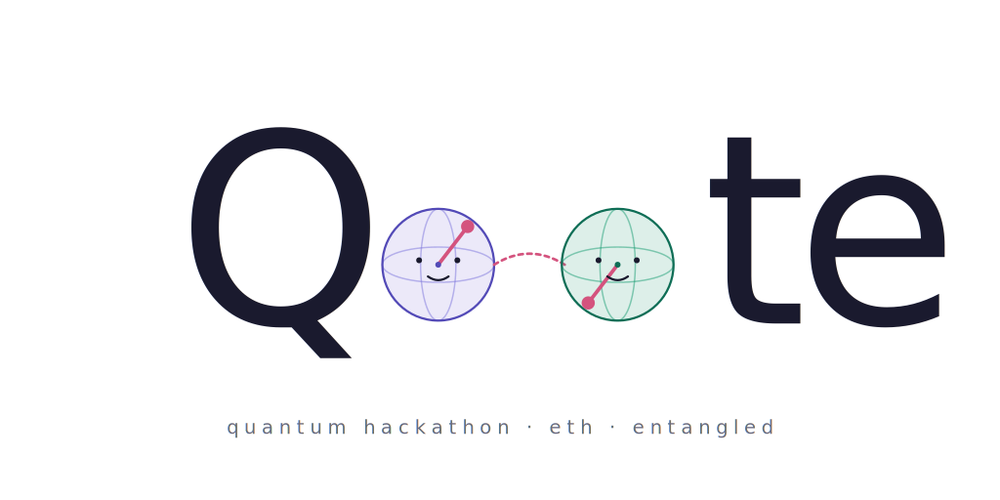
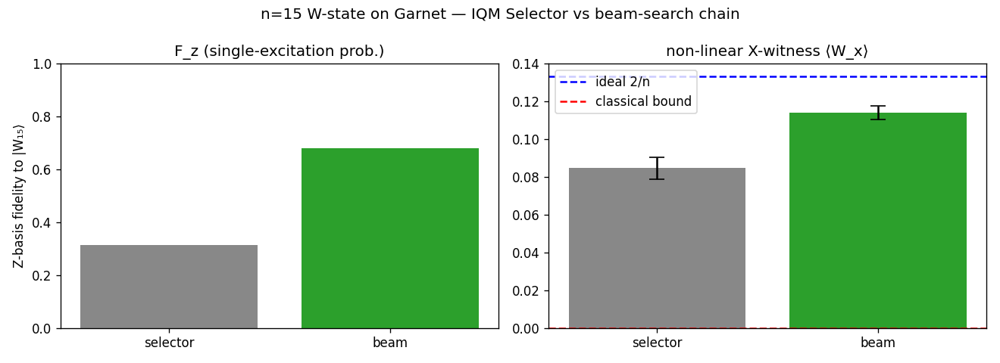
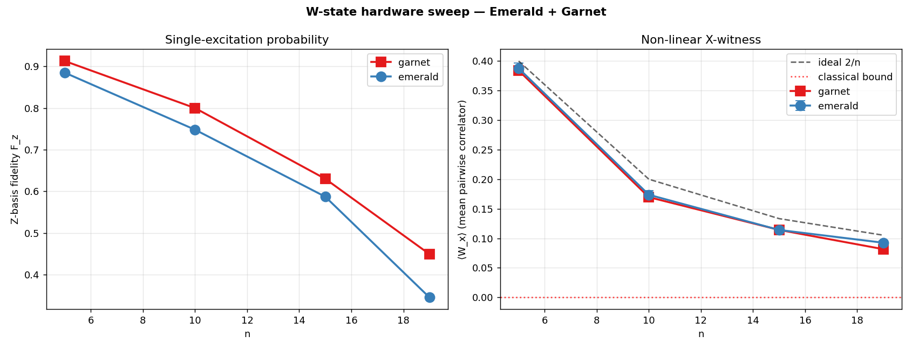
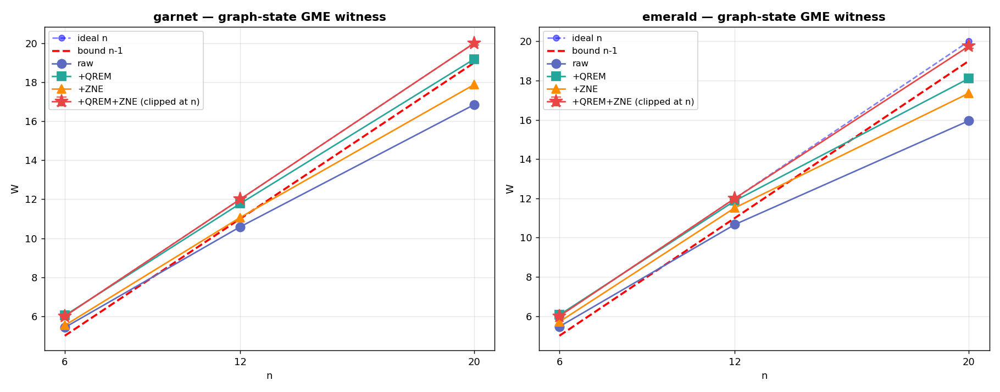
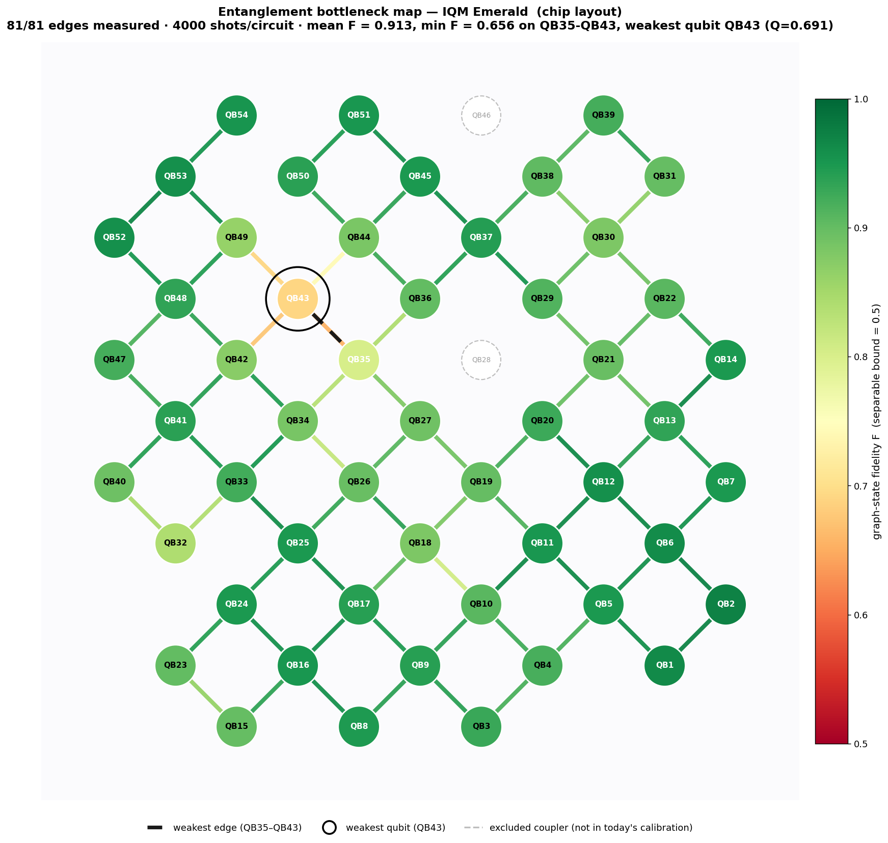

Q.te
Prove entanglement on IQM hardware — rigorously, on as many qubits as we can, in as many ways as we can.
Three goals
Theoretical correctness, qubit count, and variety of states. Plus: implementation sophistication — the engineering that turns "we tried" into "it worked".
Three threads, two devices, one notebook.
Part 1 — W-state thread
Part 2 — Graph-state thread
Part 3 — Routed Bell pair

All in one notebook
experiments/witness_my_entanglement.ipynb
~12 batched hardware jobs · reproducible offline via RERUN_HW=False
Why we don't trust the IQM Selector for chain circuits.
The IQM Qubit Selector is a great general-purpose layout tool — it scores arbitrary subgraphs. But for a circuit whose interaction graph is a chain, it can pick a layout that requires SWAPs.
Our beam-search Hamiltonian-path router scores chains directly:
Same n=15 W-state, same Garnet job, two layouts:
| Fz | ⟨Wx⟩ | σ above 0 | |
|---|---|---|---|
| IQM Selector | 0.31 | +0.085 | +14σ |
| Beam-search | 0.68 | +0.114 | +31σ |
2× the Fz on the same hardware.

n=15 W-state on Garnet · Selector vs beam-search
Non-linear X-witness — non-classical at every n on both devices.
For the W-state |Wn⟩ the pairwise X-correlator separates quantum from classical:
Conservative σ: sample-std across pairs / √npairs — absorbs inter-pair correlation.
| n | Garnet σ | Emerald σ |
|---|---|---|
| 5 | +60σ | +44σ |
| 10 | +29σ | +26σ |
| 15 | +28σ | +35σ |
| 19 | +26σ | +31σ |
n=19 is the longest Hamiltonian path on Garnet. Every (device, n) certifies non-classicality at +25σ to +60σ.

Fz and ⟨Wx⟩ vs n · dashed black: ideal 2/n · red dotted: classical bound 0
Tóth–Gühne stabilizer witness on a spanning tree.
W > n − 1 ⇒ genuine multipartite entanglement.
A spanning tree has n−1 edges → minimum CZ count. We pick the highest-fidelity tree by multi-start Prim's MST on live calibration data, with a local edge-swap refinement.
Watch Prim's algorithm grow the n=20 Garnet tree →
20-qubit GME on the entire Garnet chip.

Raw → +QREM → +ZNE → +QREM+ZNE (clipped at W=n) on both devices.
Garnet (full chip)
| n | bound | W +QREM | σ | +QREM+ZNE |
|---|---|---|---|---|
| 6 | 5 | 6.04 | +19σ | +28σ |
| 12 | 11 | 11.98 | +13σ | +25σ |
| 20 | 19 | 19.25 | +2.5σ | +15σ |
Emerald (54 q)
| n | bound | W +QREM | σ | +QREM+ZNE |
|---|---|---|---|---|
| 6 | 5 | 6.06 | +19σ | +36σ |
| 12 | 11 | 11.88 | +11σ | +28σ |
| 20 | 19 | 18.11 | −9σ | +8σ |
Mitigation: parity-QREM (no extra cal shots) · ZNE w/ barriers · bootstrap σ.
Measure every native CZ pair, then let the data pick the tree.
For every native CZ edge, prepare CZ|+⟩|+⟩ and measure
Greedy edge-coloring → all 30 Garnet edges in 4 parallel circuits. Plug w(i,j) = 1 − Fijmeasured into the same Prim's MST.
Hardware verdict (same n)
| device | n | method | W +QREM | Flb |
|---|---|---|---|---|
| Garnet | 12 | cal | 11.88 | +0.46 |
| Garnet | 12 | emp | 12.07 | +0.50 |
| Emerald | 20 | cal | 18.12 | −0.20 |
| Emerald | 20 | emp | 18.69 | +0.11 |
Empirical-F tree flips Emerald n=20 fidelity bound from negative to positive.

Emerald bottleneck map · weakest QB35–QB43 highlighted
Use the cluster as a teleportation resource.
Pick a path A — q₁ — … — B through the cluster. Measure all internals in X. What remains on (A, B) is locally equivalent to |Φ⁺⟩, modulo a Pauli byproduct.
| L | F (with) | F (no-CZ) | |S| (with) | |S| (no-CZ) |
|---|---|---|---|---|
| 3 | 0.895 | 0.494 | 2.50 | 1.38 |
| 5 | 0.819 | 0.493 | 2.22 | 1.41 |
| 7 | 0.743 | 0.495 | 1.92 | 1.33 |
Bell entanglement at every L; CHSH violates classical bound at L = 3, 5.
7-qubit path animation: cluster prep · X-meas · byproduct correction · |Φ⁺⟩
What we shipped.
Variety — 4 different witnesses
| Witness | State | Devices |
|---|---|---|
| Pairwise X-correlator | W states | Emerald + Garnet |
| Tóth–Gühne stabilizer sum | Tree graph state | Emerald + Garnet |
| Bell-equivalence F > 0.5 | Edge graph state | both, every CZ pair |
| Bell fidelity + CHSH | Routed Bell pair | Garnet, L = 3, 5, 7 |
Headline qubit counts
- 20-qubit GME on the full Garnet chip · +QREM at +2.5σ · +QREM+ZNE at +15σ
- 20-qubit GME on Emerald with empirical-F tree · Flb > 0
- n=19 W-state non-classicality at +25σ on both devices
- L=5 routed Bell + CHSH on Garnet · |S| = 2.22 above classical 2
Implementation pieces
- Beam-search Hamiltonian-path routing
- Threshold-filtered multi-start Prim's MST + edge-swap refinement
- Parity-QREM with no extra cal shots
- ZNE with barriers + bootstrap σ through QREM and the linear fit
- Edge-coloring → all CZ edges measured in parallel
- Empirical-F tree selection (Anna's edge-Bell map)
- Cluster-MBQC routed Bell pair with byproduct correction + CHSH
Code, figures, saved JSONs · github.com/GrigoVyd/iqm_qte · branch submission